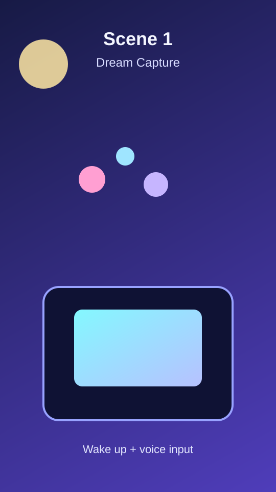
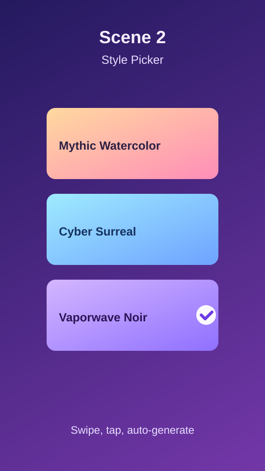
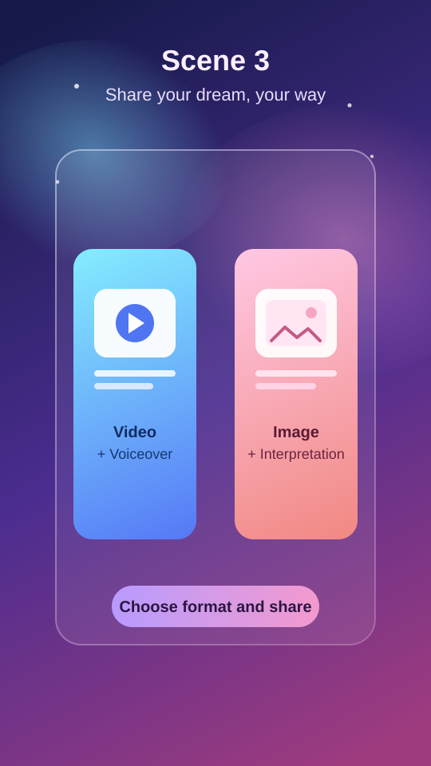

DreamPulse: AI Dream-to-Story Media Studio
Turn blurry midnight memories into surreal videos people actually want to share.
Overview
The motivation behind DreamPulse is to bridge dream journaling and entertainment by transforming a solitary, often tedious habit into an engaging digital ritual. Dreams are surreal, visual, and naturally narrative-driven, yet traditional text journals flatten that experience and fail to preserve its emotional intensity. Our project addresses the problem of rapidly fading dream memories by giving users a playful, immediate way to capture their subconscious moments before they disappear.
The primary value is user happiness through creative expression and social connection. Instead of treating dreams as clinical data, the platform embraces absurdity and imagination, generating polished content that feels magical and personal. Users gain a joyful outlet in the morning, and they can share dream highlights and interpretations on social platforms to spark conversation, amusement, and curiosity with friends and followers, creating a natural viral loop.
The platform is built as a multimodal journey: users input dreams through voice, text, or image reference; a visual-style selector proposes distinct aesthetics and supports fast regeneration; a surreal storyline engine converts fragmented memories into cinematic scene sequences; and integrated media APIs produce social-ready videos or images with narration. A final mystical interpretation module maps symbols to playful esoteric systems (Tarot, constellations, or I Ching), adding a memorable and highly shareable finale.
Team
Team Name: 404 team not found
| First name | Last name | SIS ID | |
|---|---|---|---|
| Zhihan | Xia | michael.xia@yale.edu | zx258 |
| Yiyi | Shen | yiyi.shen@yale.edu | ys868 |
| Paul | Li | paul.li@yale.edu | pl656 |
| Sophie | Gao | sophie.gao@yale.edu | yg467 |
| Leo | Li | leo.li.pl638@yale.edu | pl638 |
Storyboard
| Image | Scene Description | Narration |
|---|---|---|
|
Scene 1 · 0-10s
 |
Shot type: Tight handheld close-up, vertical frame. Setting: Early-morning bedroom with soft neon glow from phone screen. Action: User wakes up startled, opens DreamPulse, and speaks a chaotic dream memory while animated keywords materialize around the phone. |
"I just dreamed I was surfing on a giant koi fish through a city in the clouds... wait, don't let me forget this." |
|
Scene 2 · 10-20s
 |
Shot type: Dynamic screen-record style insert with quick zoom cuts. Setting: DreamPulse style-selection interface with three cards (mythic watercolor, cyber-surreal, vaporwave noir). Action: User swipes through style options, taps one, then the storyboard scenes auto-assemble as cinematic panels. |
"Pick a vibe in one tap, and DreamPulse turns your sleepy fragments into a full visual storyline." |
|
Scene 3 · 20-30s
 |
Shot type: Medium over-shoulder shot to split-card UI reveal, then end-card. Setting: Share composer with two polished cards: "Video + Voiceover" and "Dream Image + Interpretation" over a mystical Tarot + constellation background. Action: User toggles between export cards, previews both outputs, and chooses either a narrated dream video or a stylized interpretation image before posting to social media as reactions pop in. |
"Pick your format - share a narrated dream video or a mystical interpretation image - then post the version that matches your vibe." |